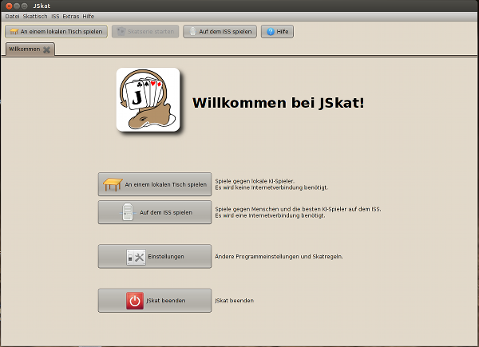
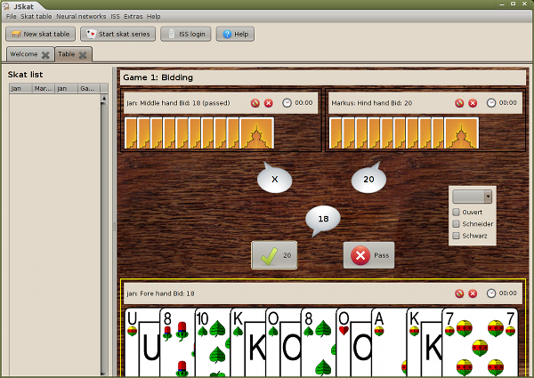
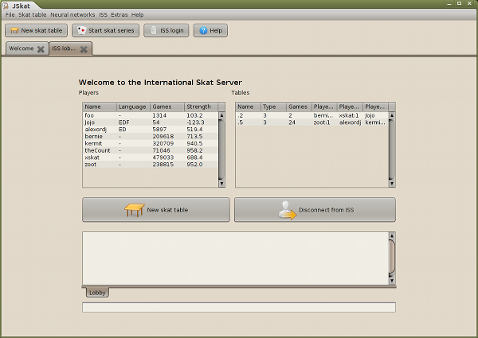
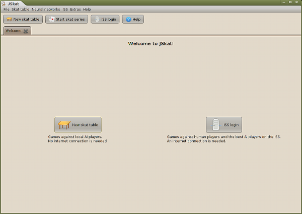
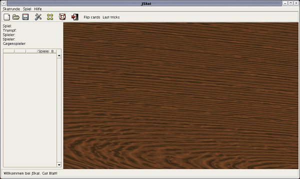
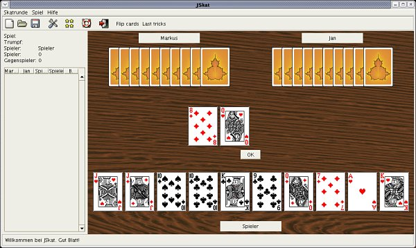
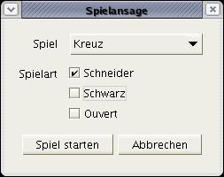
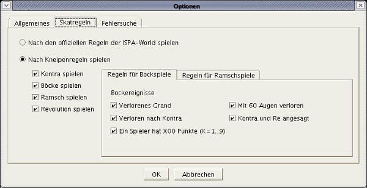

Screenshots
Current Version
The new start screen shows the two options for using JSkat: Playing offline against AI players or playing online against human players and the best AI players known today on the International Skat Server.
Bidding

Trick playing
The lobby on the ISS. You can see all players that are online and all tables where games are running.
Older Screenshots
The start screen shows the two options for using JSkat: Playing offline against AI players or playing online against human players and the best AI players known today on the International Skat Server.
After starting JSkat you'll find yourself sitting at a wooden table.

Let's start a new skat series. Here you have the choice between different AI Skat players. Player 3 can be you or also an AI player.

Now you can do the bidding.

When you did the highest bid you are asked whether you want to look into the Skat or to play a hand game.
Here you can take one or two cards from the skat into your hand.
After looking into the Skat you have to announce a game. If you didn't look into the Skat you can announce Schneider, Schwarz and Ouvert.

Now the game begins.

While playing all results will be calculated for you and a skat list with all the wins and losses is filled out.

You can have a look at the last tricks with this little dialog.

On the options dialog you can set the language, save path and other things, that control the behaviour of JSkat.
JSkat allows you to define the Skat rules in great detail. You can decide whether you want to play only according to the official rules from the ISPA-World or if you want to play with some pub rules like Kontra, Bock and Ramsch.

There is a special debug mode, where you can have a look into the cards of the other players.
 Deutsche Version
Deutsche Version English version
English version